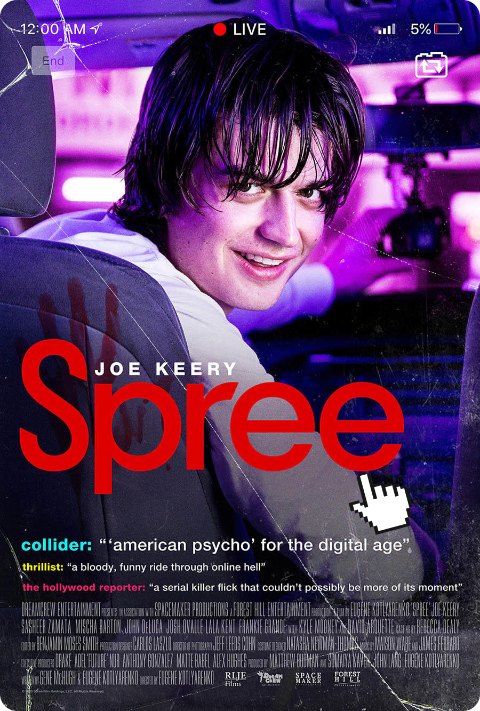
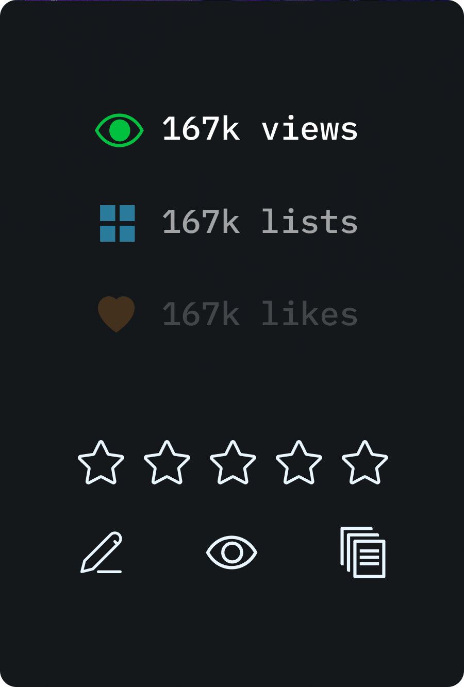
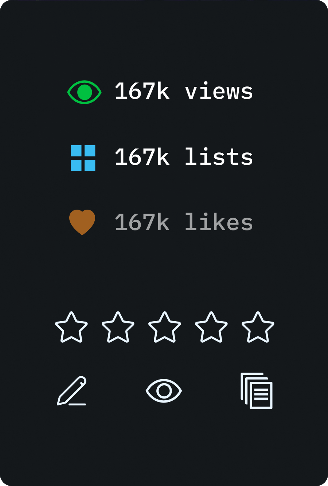
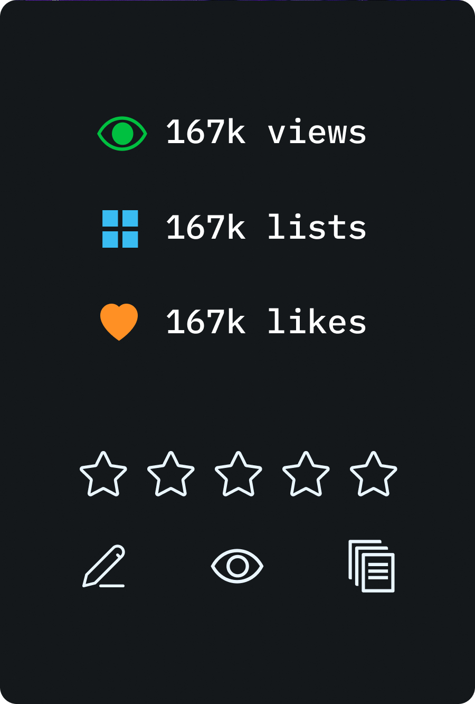
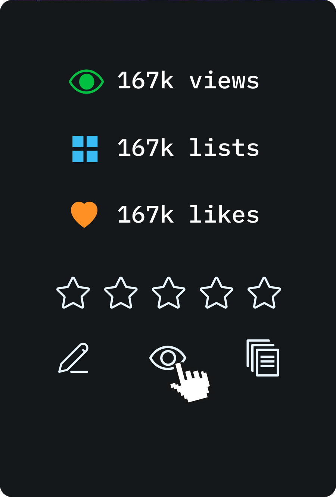
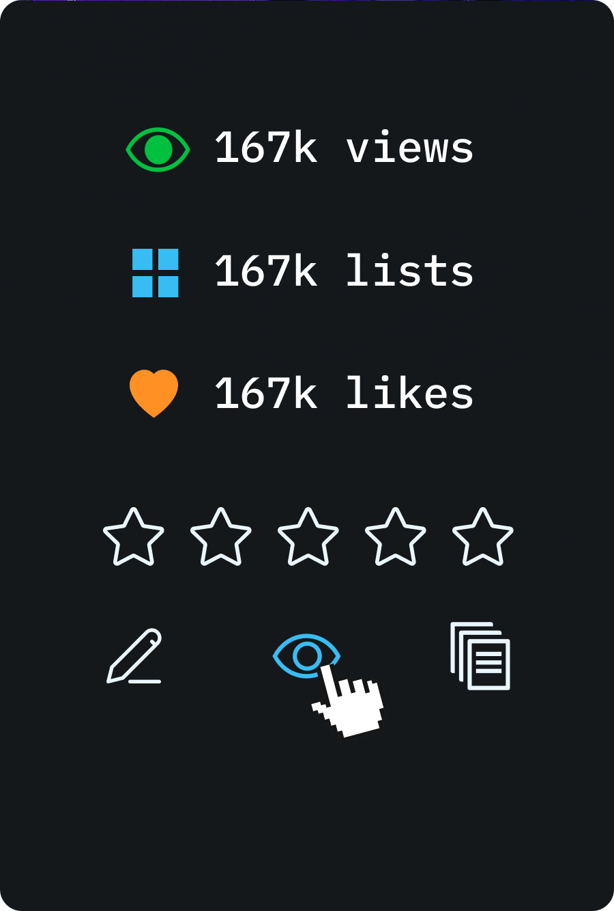

IDM 241 - MICRO INTERACTIONS | BETA DESCRIPTION
Descriptions:
TRIGGERS
- user hovers on film card
- user hovers off film card
- user hovers on eye icon
- user hovers on eye icon
RULES
- cursor changes to pointer when mouse is hovering over the card
- card transforms on the Y-axis 180 degrees
- list items fade in from 0% opacity to 100% opacity
- list items transform in the y direction up 50px
FEEDBACK
- cursor changes to pointer when mouse is hovering over the card
- card transforms on the Y-axis 180 degrees
- list items fade in from 0% opacity to 100% opacity
- list items transform in the y direction up 50px
LOOPS & MODES
- When the user is hovering over the card, the card flips over and
reveals more menu information on how the image can be interacted with, such as
writing a review, favoriting, and adding to a list. It also reveals statistics from other users from a database. When the user hovers off, the card flips back to the film poster and the user's choices are recorded in a database
Visuals:
HOVER ON CARD




HOVER OVER EYE ICON


All images and icons credited to Letterboxd